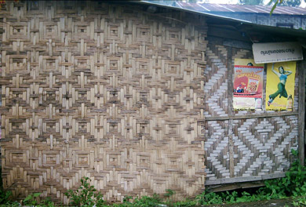

Bamboo Home Puzzle
That feeling of accomplishment was short lived, however. A month later, on a trip in Thailand from Kanchanaburi (Bridge over river Kawai) up to see the Three Pagoda Pass at the Myanmar border, one night is spent in Sangkhlaburi, just 10 miles from the border post. Leaving to catch the bus back towards Bangkok the next morning, to my amazement, there stands a small shop with two designs of bamboo panels formerly only seen in Flores. I spend a few minutes trying to find out information before my bus leaves, but communication was impossible. Where were these panels made? Did the artist emigrate from Flores? Why only one shop with two panels? The answers would have to wait more than two years.

| next: Bamboo Homes in Myanmar |
| back: bamboo Homes on Flores | ||
| Other Special Subjects: |